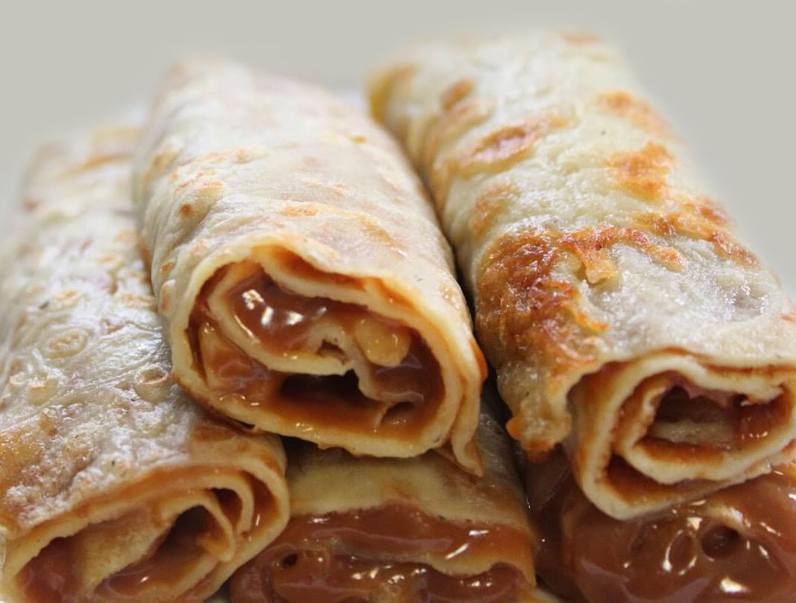
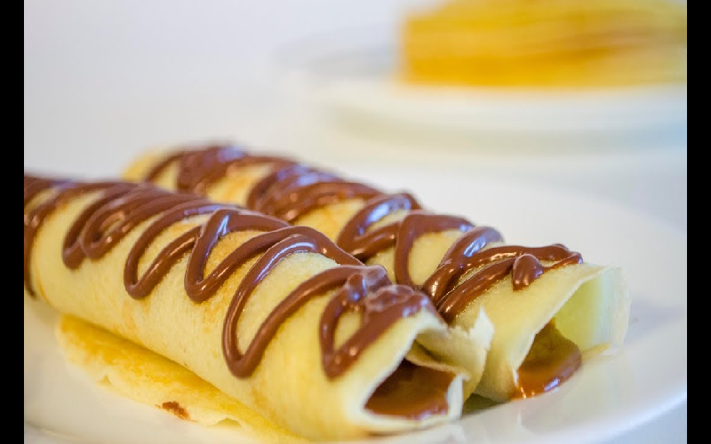

Homepage

Descripción:
Los panqueques con dulce de leche son un postre ideal para despues de una buena comida porque son faciles de hacer, no lleva mas de 10 minutos y son riquisimos
Ingredientes
- 250 ml de leche entera
- 135 g de harina de trigo o harina 0000,
- 2 huevos
- 100 g de Manteca
- dulce de leche
Preparación:
- Colocamos en un bol o recipiente la harina y añade el huevo y la leche. Asegúrate de mezclar bien los ingredientes hasta que no queden casi grumos. Una vez tengas la masa lista, dejamos reposar la mezcla en la nevera o heladera por una media hora aproximadamente para que la harina se hidrate.
- Calentamos una sartén antiadherente en el fuego a potencia media baja con un poco de aceite o manteca (mantequilla). Cuando esté caliente, echa una cucharada de la mezcla y espera a que se cuaje bien la masa.
- Cuando la superficie de los panqueques comience a verse ligeramente cuajada, volteamos con ayuda de una lengua de silicona o una espátula.
- Vamos poco a poco haciendo panqueque por panqueque con paciencia, enmantecando cada tanto el fondo de la sartén para dar sabor y evitar que se peguen a la superficie. Hay que tener cuidado de que no se caliente demasiado la sartén o panquequera y no hay que intentar despegarlos pues se van a despegar ellos solos.
- Cocemos por el otro lado durante un minuto (no más) antes de retirar a un plato. Listos para comer.

Return to top